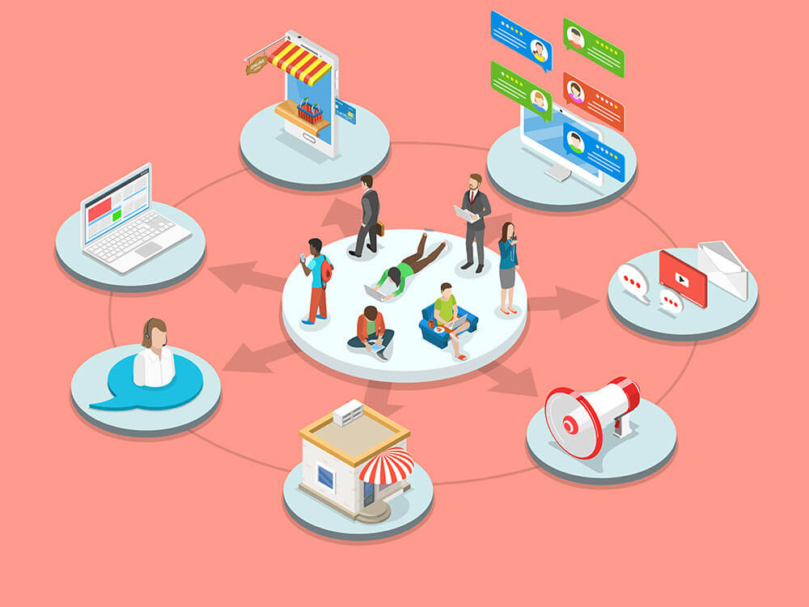
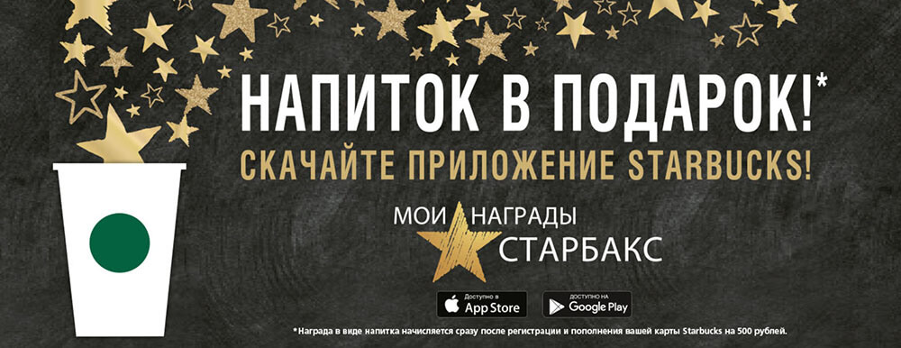
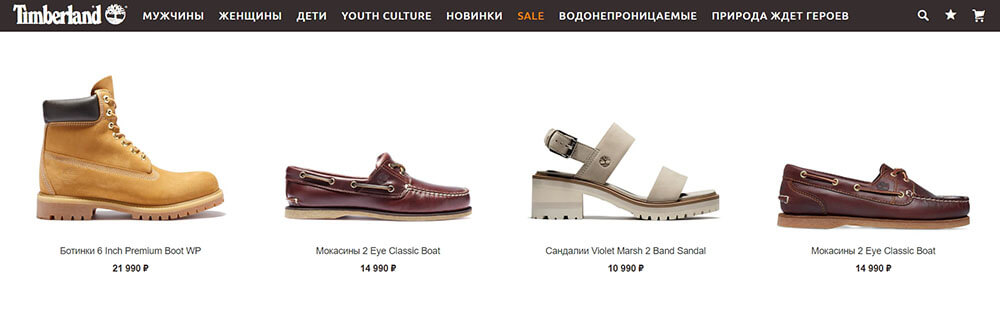
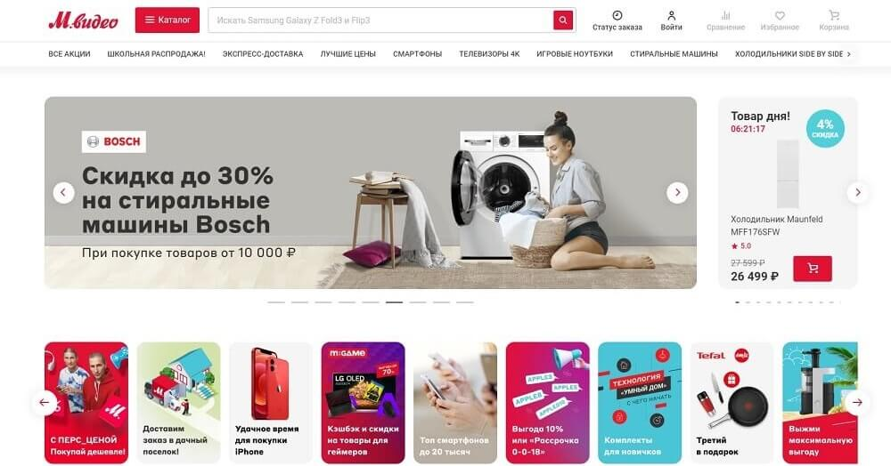
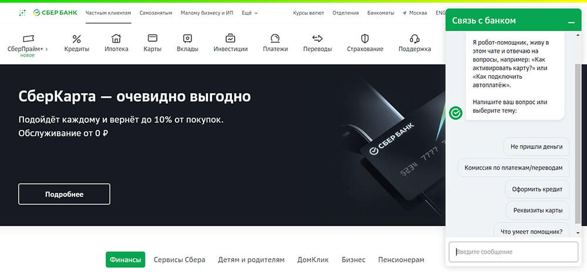

Омниканальность – единая бесшовная система коммуникации, объединяющая все возможные способы связи бизнеса с клиентами.

Omni-channel marketing появился сравнительно недавно, но уже занял достаточно твердую позицию в сфере digital. Многие путают омниканальность с много- или мультиканальностью. Чтобы точнее понять суть термина «омниканальность», для начала посмотрим на перевод.
Omni (омни) – «каждый, все».
Channel (ченнел) – «канал».
Отсюда видно, что речь идет абсолютно обо всех доступных способах прямой или косвенной коммуникации с клиентами, которые объединяются в общую систему и становятся полностью взаимозаменяемыми.
Применение этой целевой технологии в бизнесе значительно повышает конверсии и др. показатели, усиливает лояльность клиентов и позволяет облегчить работу сотрудникам компании.
Что такое омниканальность простыми словами
Таким образом, чтобы понять принцип омниканальной модели, посмотрим, как она работает на реальном примере.
{kind=link}
Команда дизайн-студии получила очень крупный заказ с предоплатой по оформлению и разработке «под ключ» загородного дома в Подмосковье. Перед тем, как выбрать фирму, клиент:
- увидел контекстную рекламу и перешел на сайт, изучил предложение и акции, оставил телефон;
- пообщался с менеджером, узнал примерную цену дизайн-проекта, затем задал вопросы в Skype;
- подписался на блог студии, читал статьи и отзывы;
- в ближайшее время получил бесплатную email-рассылку с предложением заказать дизайн-проект со скидкой 15% по хорошему чеку;
- начал искать и изучил предложения других студий на этом рынке, провел анализ и исследования;
- вернулся, внес предоплату и оформил заказ.
Все время от момента первого касания до закрытия заказа омниканальная CRM собирала и хранила данные о клиенте, его интересах независимо от того, откуда эти данные поступали. Каналов взаимодействия и привлечения было несколько: контекстная реклама, сайт, телефон, Skype, блог, email-рассылка. Каждый ресурсов внес личный вклад в принятие решения потребителем.
Отличие омниканальности от многоканальности
Из-за некорректной трактовки дословного перевода омниканальность часто путают с многоканальностью. Однако омниканальный подход имеет главную особенность, которая отличает его от других подходов, – наличие взаимосвязи между всеми каналами коммуникации. Каким бы способом потенциальный клиент ни взаимодействовал с компанией и с кем бы ни общался, данные о контакте собираются в единую базу, которая доступна всем сотрудникам, включая маркетолога. Вот, как выглядит омниканальность.
{kind=link}
Представьте, что вы задали нетипичный вопрос в онлайн-чате на сайте. Омниканальное взаимодействие предполагает, что вас попросят оставить email, куда будет направлен развернутый ответ.
Еще пример. Вы звоните и интересуетесь услугой, общаетесь с менеджером, затем берете паузу. Через неделю решаете сделать заказ и снова звоните. Трубку снимает уже другой специалист, но оператор понимает, о чем вы говорили с предыдущим сотрудником. Это тоже омниканальный сервис.
Все логично и правильно, разве может быть иначе? Может.
Многоканальность
Многоканальный подход предполагает использование все тех же каналов коммуникации, но без их взаимосвязи. Обычно, данные не собираются в единую базу и не доступны одновременно нескольким сотрудникам. Это усложняет работу компании и доставляет неудобства пользователям, снижая лояльность.
Вот как развивались бы события в рассмотренных примерах, будь там задействован многоканальный сервис.
- В чате дают почту менеджера предлагая продублировать вопрос, т. к. невозможно передать его компетентному лицу из чата и обеспечить его обработку.
- При разговоре с другим сотрудником вам приходится повторно рассказывать о том, какая услуга интересует и о чем договорились с предыдущим менеджером и отвечать на другие вопросы.
Понятно, что в обоих случаях результатом отсутствия омниканальности и применения многоканального маркетинга становится потерянное клиентом время и неудобства.
Кросс-канальность
Иной формат – кросс-канальность. Он предполагает взаимодействие с клиентом по разным каналам продаж. Значит, каналы работают поступательно, но обособленно.
Например, вы выбираете подарок на День рождения ребенка. В директе видите рекламу игрушки, переходите на сайт, смотрите фото и описание, но не решаетесь добавить в корзину и купить. В ВК вам попадается похожая по смыслу реклама этой же игрушки и вы, наконец, покупаете.
Сработала кросс-канальность. Рекламная кампания была настроена так, что следующий по очереди канал взаимодействия как бы «дожимал» до покупки пользователя, который ушел с менее конвертирующего канала.
Один канал
Есть клиенты, которые предпочитают взаимодействовать с компаниями только по одному каналу. Например, только телефонные звонки или только мгновенные сообщения в мессенджере. Для пользователей такой формат удобен тем, что не нужно собирать информацию об одном и том же предмете из разных источников.
Пример. Вы звоните, чтобы уточнить стоимость конкретной модели двери с установкой и демонтажем старой двери. Сразу же по телефону получаете сумму, которая более чем устраивает, и договариваетесь о доставке с оплатой по факту. Когда приезжают установщики с дверью, связь снова происходит по телефону. Затем представитель фирмы делает звонок, чтобы узнать, устроил ли товар и качество услуг.
Для клиента общение происходит удобно, быстро, по делу. Для компании это может быть единственный способ коммуникации с клиентами, а может быть один из многих.
Как интегрировать omni-channel в бизнес
Чтобы омниканальность стала частью бизнеса и помогла в его развитии, недостаточно внедрить инструменты и ждать. Важно пересмотреть, а при необходимости полностью перестроить стратегию взаимодействия с клиентами.
{kind=link}
Основа омниканальности – клиентоориентированность. Бизнес-процессы в компании, особенно корпоративная культура на всех уровнях, должны быть построены вокруг клиента. Омниканальная стратегия работает, когда его потребности, лояльность, удобство и время для компании на первом месте.
Необходимо создать единый стандарт взаимодействия с аудиторией в рамках .воронки продаж Оптимально работать по скриптам.
Если компания имеет ограниченный набор каналов связи, желательно его расширить, проанализировав предварительно популярные предпочтения и потребности пользователей.
Омниканальная платформа связана с корпоративной CRM, поэтому ее необходимо частично автоматизировать. Например, чат-боты разгрузят менеджеров и помогут собирать и закрывать больше обращений клиентов, а рассылки покажут предложение одновременно сотням потребителей.
Плюсы внедрения
Омниканальные коммуникации – однозначный плюс как для бизнеса, так и для клиентов. Благодаря внедрению этой новой технологии люди получают возможность удобнее коммуницировать с компаниями, а предприятия могут рассчитывать на более лояльную аудиторию, увеличение числа продаж и повторных продаж.
{kind=link}
По статистике, фирмы, внедряя и практикуя омниканальное обслуживание клиентов, удерживают в среднем на 56% больше аудитории и закрывают в 2-3 раза больше заказов, чем компании с мультиканальным принципом работы.
Преимущества для аудитории
- Удобное взаимодействие. Покупатель связывается с компанией по таким каналам, которые для него предпочтительны, без потери в качестве обслуживания.
- Персонализированная коммуникация. В базе хранится вся история и информация о клиенте, его заказах и интересах, откуда он пришел. Не нужно при каждом контакте давать одни и те же данные.
- Отсутствие повторов в коммуникациях. Без омниканальности пользователи могут получать один и тот же предложенный контент через разные каналы, что вызывает раздражение в условиях перенасыщения информацией.
- Быстрое решение вопросов. Многие каналы позволяют реагировать на запросы клиента моментально и обеспечивать актуальными предложениями.
Преимущества для бренда
- Рост KPI и повышение эффективности маркетинга. Сбор данных о клиентах ведется параллельно со всех каналов связи. Это дает четкое понимание потребностей ЦА, помогает составить ее портрет и собрать отчетность.
- Сохранение клиентов. Даже в случае смены пользователем номера телефона он все равно остается доступен по другим каналам связи (push или пуш-сообщения в браузере, email и другие).
- Сервис одинакового уровня. Данные о пользователе хранятся в базе, проработаны и подключены скрипты, алгоритмы взаимодействия и поддержки. Единая стратегия поведения менеджеров действует независимо от канала коммуникации.
- Увеличение охвата аудитории. Даже пользователи, которые выбирают только один канал, могут стать клиентами компании благодаря внедрению омниканальности.
- Снижение нагрузки на колл-центр. Ряд инструментов позволяют частично автоматизировать процесс коммуникации.
Возможные барьеры внедрения
Не всегда получается легко внедрить омниканальные решения. Иногда в бизнесе возникают серьезные проблемы и трудности.
- Устоявшиеся бизнес-процессы. В компаниях, которые работают ни первый год, как правило, действуют давно выстроенные стратегии и алгоритмы работы, которые сложно менять для перехода на омниканальность. В частности, требуется техническая модернизация CRM, подключение новых каналов коммуникации, обучение сотрудников.
- Затраты. Омниканальный ритейл может обойтись достаточно дорого, если организация крупная и требует проектирования индивидуальной системы под поставленные задачи. Однако стартапам и малому бизнесу могут подойти готовые платформы. Они имеют несколько тарифных планов, из которых можно выбрать вполне доступный вариант, тем самым повысить количество продаж и сэкономить средства.
- Отдельный специалист для круглосуточной поддержки. Эффективная работа системы требует участия CRM-маркетолога. Он настраивает маркетинговые коммуникации с учетом персонализации, создает поканальную стратегию, проверяет гипотезы продвижения и т. д.
Лучшие примеры омниканальности в бизнесе
Следует обратить внимание, что в условиях высокой конкуренции современные организации не имеют права на ошибку. Каждый шаг в сторону удовлетворения клиентских потребностей засчитывается в пользу компании и повышает лояльность. Чем лояльнее потребитель относится к бренду, тем большую прибыль может получить бизнес.
Омниканальность для клиента – это, прежде всего, возможность удобно покупать товары и понимание того, что компания должна учитывать именно его интересы в своей работе.
Сейчас большинство предприятий ставят клиентоориентированность во главу угла и переходят на омниканальность, чем располагают к себе все больше потребителей.
Омниканальный маркетинг
Рассмотрим и расскажем, как может быть реализована омниканальность в маркетинге на примере сети известных кофеен Starbucks. Компания ввела для своих клиентов систему персональных карт, к которым привязываются профили гостей и их счета.

Получить клиентскую карту кафе может каждый, а для управления счетом предусмотрено множество вариантов. Пополнить баланс можно в кофейне офлайн, через сайт, который специально адаптирован, в мобильном приложении или с помощью смартфона.
Кроме удобной системы персонализации и оплаты, сеть внедрила ряд бонусов. В частности, в кофейне есть свой плейлист: гости могут не только слушать любимые композиции локально, но и сможет выбирать музыку, которая будет звучать в кофейне.
Омниканальные продажи
Омниканальность в ритейле дает наиболее четкое представление об эффективности этого инструмента, ведь главный индикатор в данном случае – продажи. Рассмотрим далее в статье несколько примеров компаний, которые эффективно используют омниканальные продажи.
Timberland

Торговая марка Timberland формирует персональные предложения путем активного взаимодействия с клиентами на основе информации о покупательском поведении в своих офлайн магазинах во всем мире. В точках продаж покупатели бесплатно получают планшеты со сведеньями о товаре, характеристиках и наличии. Люди с помощью мобильного гаджета могут просмотреть любые позиции онлайн и решить, в какой магазин ехать, если хочет их купить. Данные о просмотренных позициях принимаются и сохраняются. Американская омниканальная платформа использует их для формирования рассылки через интернет, и через некоторое время клиент получает индивидуальное предложение на email.
М.Видео
Сеть М.Видео стала одной из первых, кто внедрил и стал использовать омниканальность. Поскольку более 70% покупателей знакомятся с магазином и выбирают товары через интернет, а многие предпочитают и оплачивать покупки онлайн, компания сделала упор на интегрированные продажи.

Где бы покупатель ни выбирал товар – в интернет-магазине, мобильном приложении или офлайн – везде он видит одинаковый ассортимент, цены, спецпредложения. Интернет служит дополнением привычным магазинам. Каждый торговый зал сети оснащен digital-инструментами с установленными приложениями для оптимизации выбора товаров и операций покупки. Все то же самое доступно в приложении на смартфоне и других устройствах, что особенно удобно пользователям. Работают электронные киоски, установлены маяки Wi-Fi. Планшеты продавцов в магазинах интегрированы с рабочими системами сети.
Любой из перечисленных инструментов помогает компании отслеживать влияние интернет-взаимодействия с клиентами на реальные продажи, что обеспечивает вендор – веб-платформа электронной коммерции Ecommerce. Это нужно для персонализации предложений и повышения продаж.
Пример в банкинге
Полного перехода на омниканальность упорно добивается «Сбербанк», изменяя все основные системы. Благодаря этому клиенты банка получают все больше возможностей в личном кабинете. Например, можно проанализировать расходы перед крупными покупками или настроить автоплатеж по регулярным счетам (ЖКХ, кредиты, оплата за детский сад и т. д.).

«Сбербанк» присутствует во всех соцсетях, где можно получить консультацию или высказать мнение. Все каналы связаны друг с другом. Также посетителям сайта доступен онлайн-чат, где можно проконсультироваться по вопросам малого бизнеса.
Пример в поддержке клиентов
Поддержка – расходная ветвь работы компании. Здесь в коммуникации заинтересован тот, кому нужна помощь. Однако косвенно это также влияет на продажи в будущем, поскольку клиент, который удовлетворен качеством поддержки, скорее всего, вернется за следующей покупкой.
Омниканальность можно рассмотреть на примере облачного сервиса. Предположим, что система дала сбой, и клиент обратился в поддержку по электронной почте или отправив форму обратной связи. В ответ сразу же получил подтверждение о принятии заявки. Чтобы ускорить процесс, связался со специалистом по телефону. При этом в поддержке уже знали, кто звонит, по какому вопросу и начали разговор, минуя уточнения. Чтобы не пропустить письмо с ответом техподдержки, клиент просил связаться с ним в Телеграм.
В данном случае все коммуникации с клиентом были связаны. Компания получала и предоставляла информацию независимо от того, каким способом общался клиент. При этом было сделано все, чтобы последнему было удобно взаимодействовать с поддержкой. То же самое актуально для авиакомпаний, перевозчиков и практически всей сферы услуг.
Необходимые инструменты
Омниканальная торговля любым продуктом может быть реализована только с помощью специальных инструментов, основным из которых выступает платформа. Ее выбор определяется коммуникативными задачами и спецификой конкретного бизнеса.
{kind=link}
Компании, которые только начинают работу или нуждаются в простейших функциях омниканальности, могут использовать готовые SaaS-решения. Предприятиям с более многочисленными задачами доступны коробочные системы. Если же требуются нестандартные опции, есть смысл создать собственную платформу.
Основная задача инструментов омниканальности – сбор данных о пользователях, их интересах, предпочтениях, поведении из разных каналов связи для автоматизации, сегментации и формирования персонализированных предложений.
Какие каналы стоит внедрить
Взаимодействие бизнеса с клиентами может происходить в разных средах. При этом главный принцип омниканальности в недопущении их разрозненности. Все коммуникационные каналы должны быть объединены в единую сеть и синхронизированы, тогда удастся добиться высокой эффективности.
{kind=link}
Какие же каналы стоит использовать в первую очередь?
Мессенджер-маркетинг
Люди любят мессенджеры за быстрое реагирование. Наиболее распространены viber, whatsapp, telegram. С их помощью на любой вопрос можно получить ответ за несколько секунд. Оперативность со стороны бизнеса – признак клиентоориентированности и залог формирования лояльности. Также это эффективный канал распространения рекламного контента.
Контент-маркетинг
Доверие к бренду повышается, когда компания демонстрирует экспертность, подкрепляя ее полезными для пользователей материалами. Это могут быть обзорные статьи, руководства, подборки рекомендаций от специалистов, кейсы и т. д. Кроме того, контент-маркетинг помогает привлечь трафик из органической выдачи (поиск).
SMM
Соцсетями пользуются почти все, это площадка для живого общения. Здесь можно вести и поддерживать общение, обменяться опытом покупки и знаниями, проконсультироваться. Пользователи, имеющие аккуанты, подписываются на бизнес-сообщества в facebook и др. соцсетях, чтобы узнавать о новинках, новостях, изменениях в графике работы, открытии новых филиалов и другую полезную информацию.
Email-маркетинг
Экспертно составленные электронные письма, в т. ч. по шаблонам письменных обращений, в рамках продуманной стратегии помогают пользователям получать актуальную для себя информацию, а бизнесу – демонстрировать компетентность в определенных вопросах и плавно подводить клиентов к покупке. Для настройки триггерных сообщений в рамках транзакционных и регулярных емейл рассылок чаще используют платформы sendpulse, mailchimp и другие.
SMS
Сроки действия скидок, изменения в графике работы, проводимые мероприятия, приглашения к участию в розыгрышах призов (в том числе и от партнеров) – эту и другую информацию от бизнеса пользователи могут получать в виде смс-уведомлений. Это ненавязчиво и достаточно информативно для формирования положительного впечатления.
Омниканальный путь покупателя
От первого знакомства с продуктом до покупки клиент проходит долгий путь, состоящий из множества этапов: изучение, сравнение с конкурентами, консультация, корзина, заказ, доставка, сервис. На каждом из них взаимодействием с брендом происходит посредством разных каналов: сайт, мессенджеры, электронная почта, звонки, социальные сети (вконтакте, instagram), реклама.
{kind=link}
Иногда процесс выбора может длиться несколько недель и даже месяц. При этом клиентам важны простота и удобство. В условиях высокой конкуренции менее комфортные условия взаимодействия с брендом могут стать причиной отказа от покупки даже в ущерб финансовой составляющей.
Благодаря внедрению омниканальности компании обязательно получают возможность объединить все каналы, сделать путь потребителя более комфортным, оптимизируя при этом работу бизнеса.
Простой пример. Клиент ввел поисковый запрос, случайно увидел продукт в Директе и заинтересовался, но дальше отвлекся и забыл о нем. Через время этот же продукт показался в рекламе ВК, где пользователь уже кликнул, подписался и перешел на сайт, но затем ушел. В конце концов, сработал ретаргетинг в ФБ, откуда и поступила заявка в компанию. Глядя на то, что из различных соцсетей поступает больше заявок, чем из Директа, и они дешевле, маркетолог решает отказаться от контекстной рекламы, чтобы перебросить бюджет на рекламу в соцсетях. Итог – со временем компания вовсе остается без заявок.
Такого можно избежать благодаря внедрению омниканальности, которая позволяет отслеживать весь путь клиента от первого касания до поставленной цели.
Стратегии омниканального маркетинга
- Полное погружение в среду, в которой находятся потребители продукта.
- Улучшение юзабилити и доступа сайта, сокращение времени загрузки страниц.
- Стимуляция аудитории к созданию оригинального пользовательского контента.
- Внедрение дополнительных выгод от покупки: добавить товары со скидкой, скидки при определенной сумме чека, несколько товаров по цене одного, подарки и т. д.
- Проведение конкурсов с голосованием и интересным предложением для победителя.
- Персонализация бизнеса, создание уникальных черт, ассоциирующихся с брендом.
- Участие в благотворительности.
- Создание и обновление емкого, полезного контента в помощь аудитории.
Подводим итог
При взаимодействии с брендом клиенты всегда выбирают наиболее удобный и привычный способ. Один пользователь сразу же звонит по телефону в надежде получить максимально исчерпывающий ответ. Другой обращается в мессенджер, ведь это быстро и удобно. Третий подписывается на группу в соцсети и становится активным участником обсуждений. Четвертый приходит в офис, найдя его адрес.
Какие бы каналы общения ни выбирали потребители, омниканальность продаж невозможна, если в компании не выработана целостная стратегия. Корпоративная культура, построенная на базе клиентоориентированности, – вот, что прежде всего должно быть налажено и использоваться в бизнесе. Только в этом случае удастся добиться высокого качества сервиса по всем каналам взаимодействия с клиентами.
Оставить комментарий
Войти с помощью